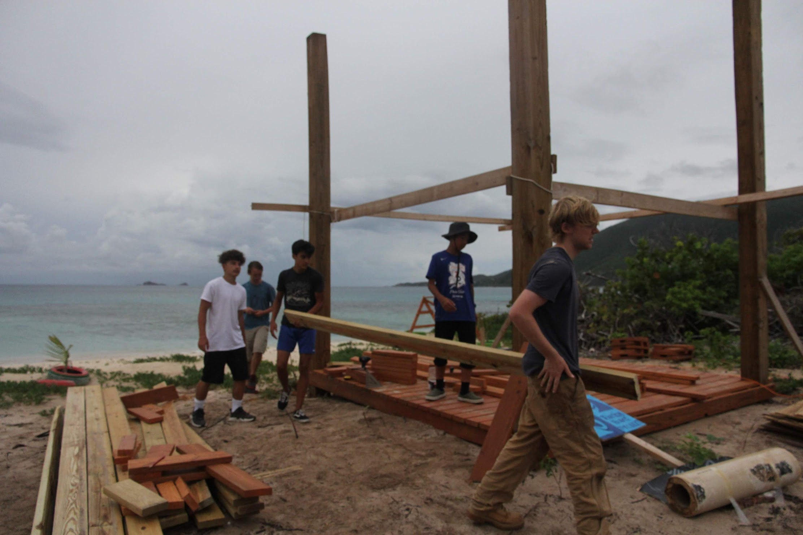
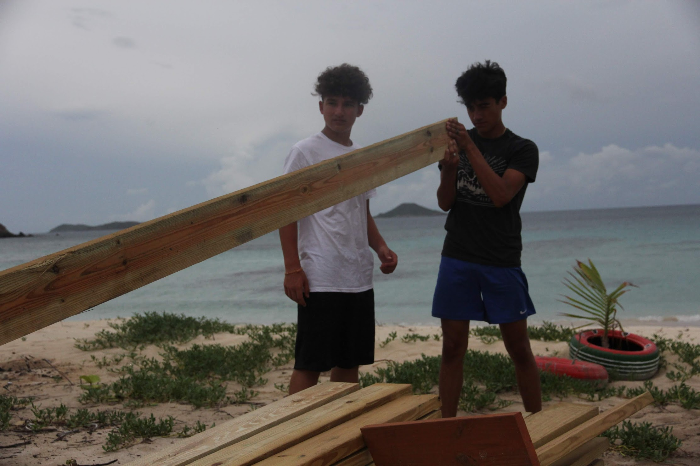
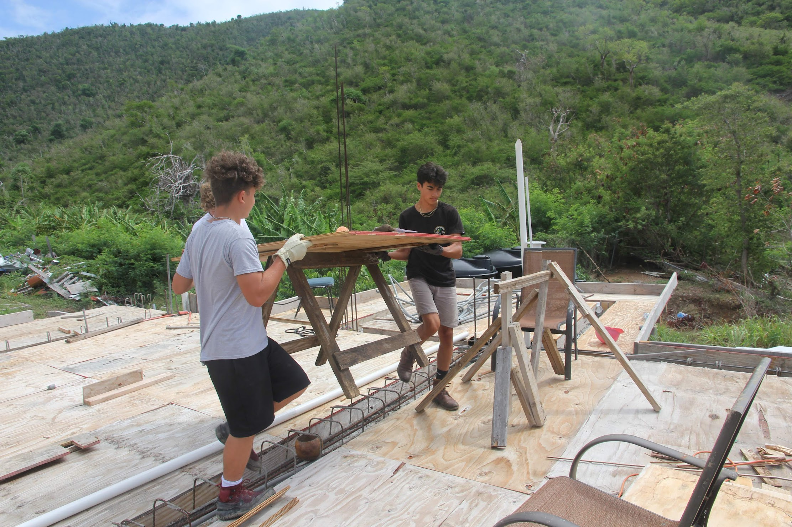
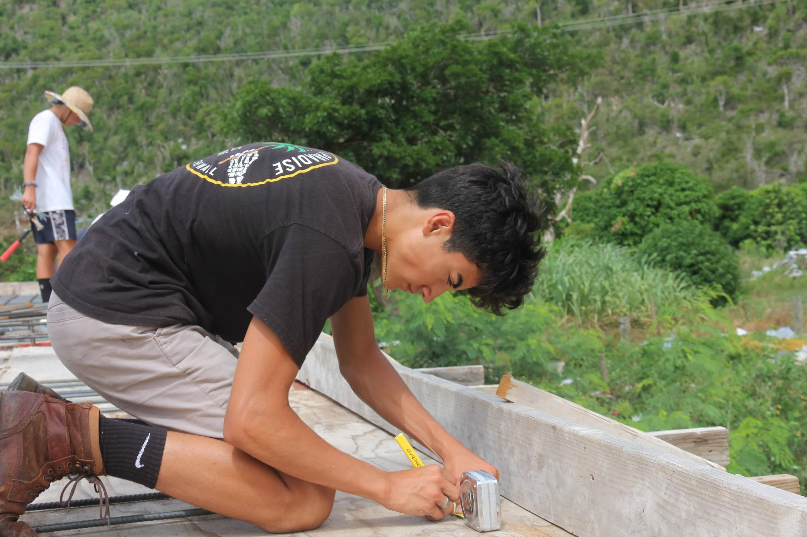
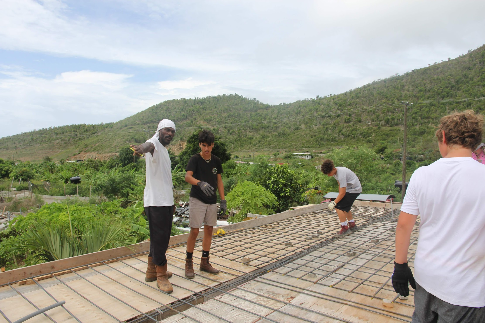
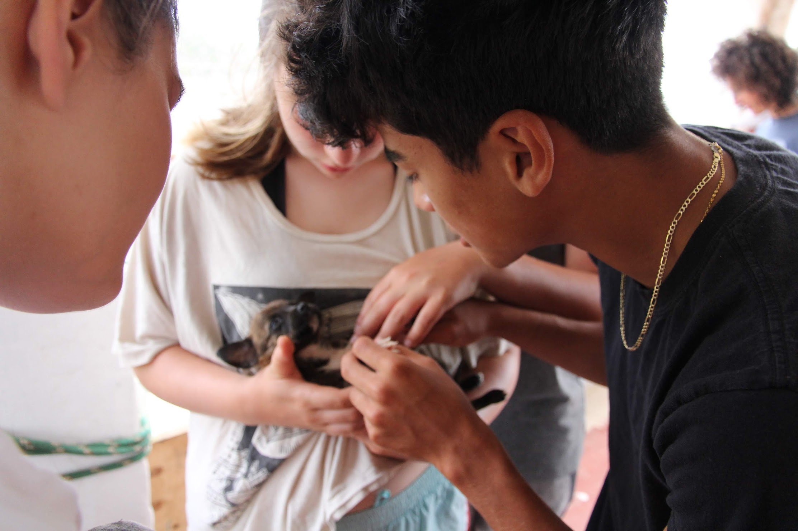
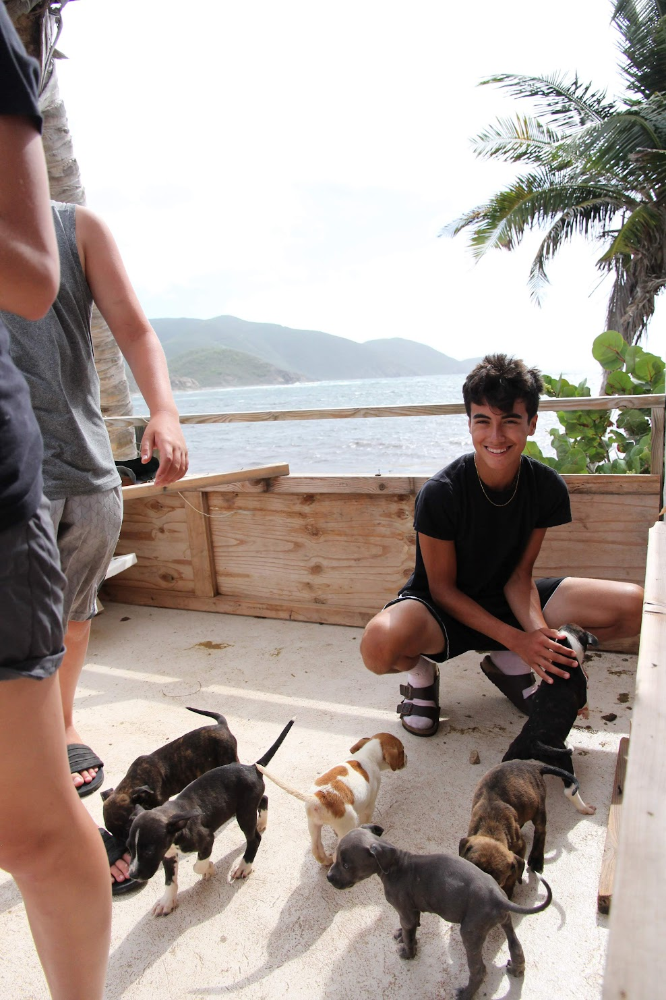
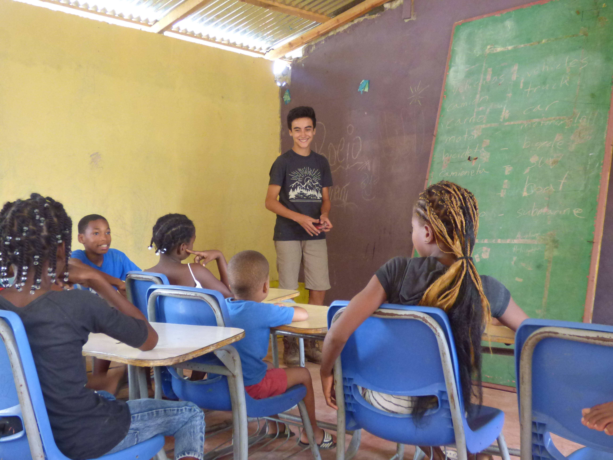
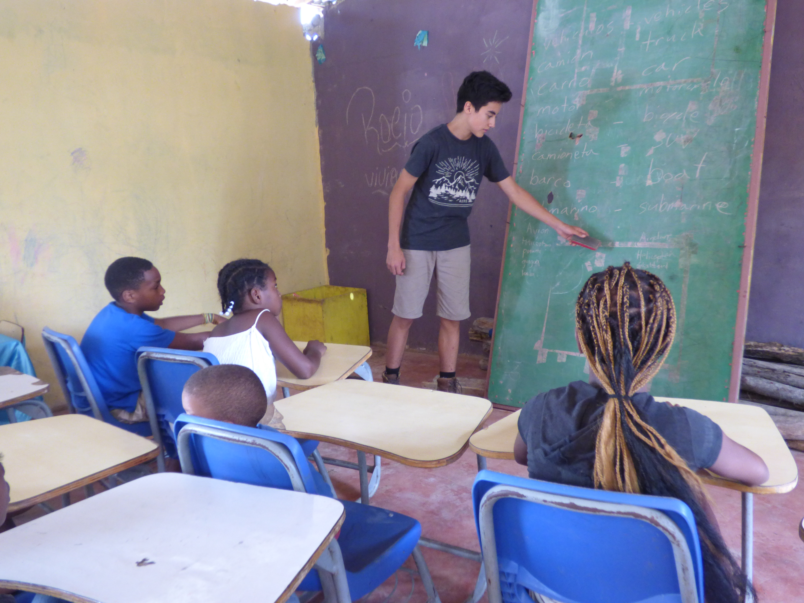
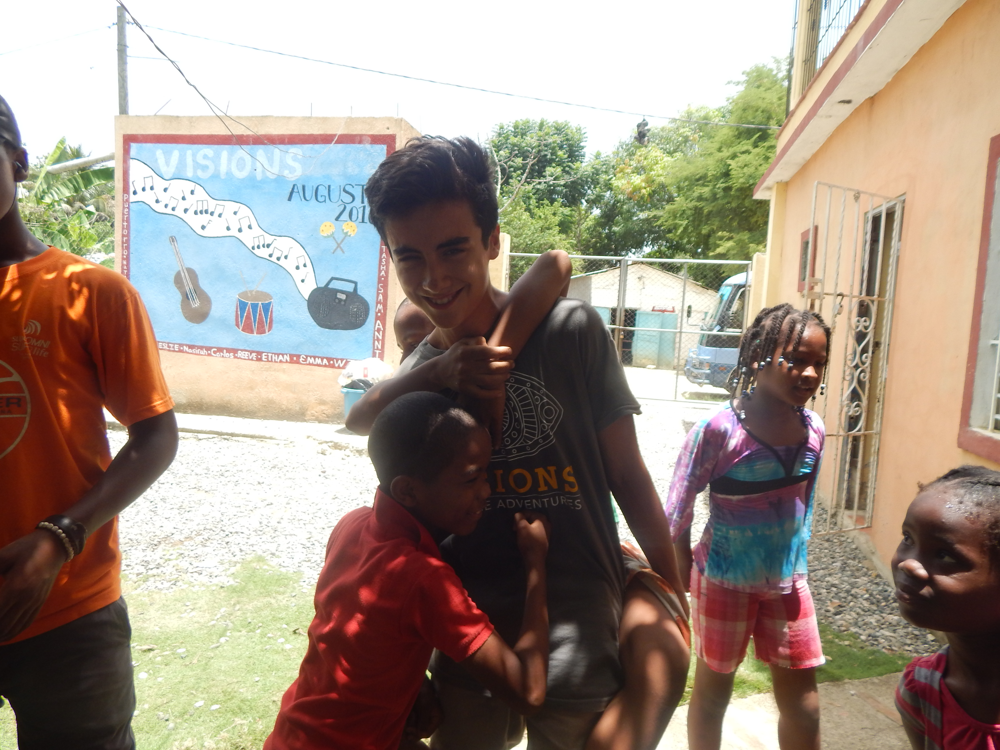

My Work
Portfolio
A collection of projects across business strategy, data analysis, research, and writing —
plus community work from the field. Each piece reflects how I think through a problem
and communicate what I find.
Some of the most formative experiences I've had weren't in a classroom.
Volunteering internationally — building structures on a beach in the BVI,
teaching English to kids in the Dominican Republic — taught me how to work in conditions
you can't fully plan for, communicate across language and culture, and stay useful when things get hard.
British Virgin Islands — Sunshade Repair & Animal Rescue
Repaired a beach sunshade structure with a small team — no contractor, just hands and problem-solving.
Also assisted a local rescue operation with puppy deticking and care,
which turned out to be one of the more memorable things I've done.







Dominican Republic — Daycare & Primary Education Center
Helped build and run a community education center from the ground up —
construction during the day, teaching beginner English and running activities with the kids afterward.
It pushed my Spanish, my patience, and my ability to lead without a clear playbook.



